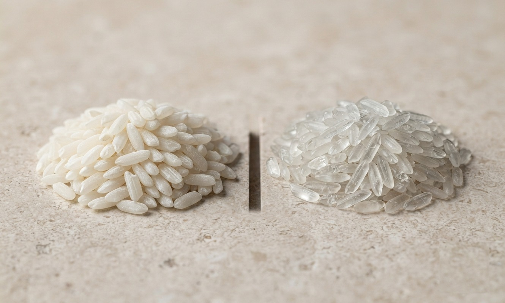
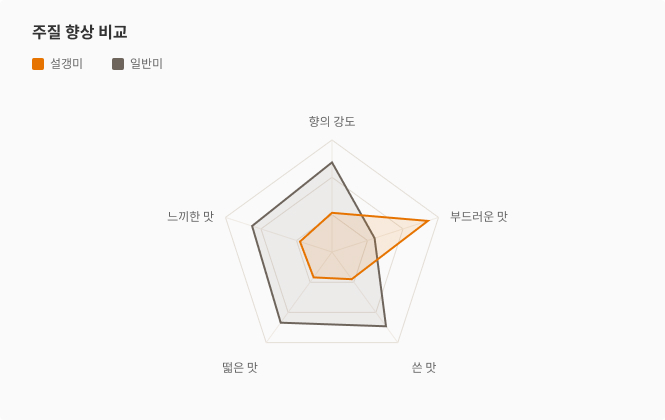
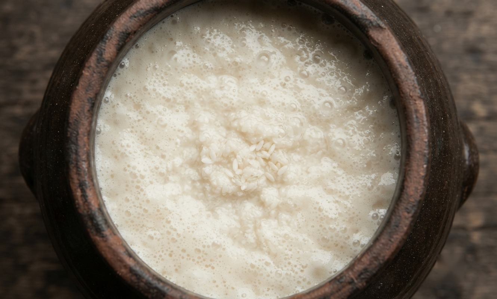

쌀부터
다르게 시작합니다
술을 빚기 위해 태어난 쌀 설갱미.
열을 가하지 않는 생쌀발효법으로 빚습니다.
좋은 술의 원료 설갱미로 술을 빚고
다시 자연으로 돌아가기까지
국순당은 국내 최초 양조 전용 쌀 설갱미를 개발하여 전통의 우수한 생쌀발효법으로 술을 빚습니다.
설갱미 소개
설갱미는 술을 빚기 위한 최적의 쌀입니다.

왼쪽 설갱미 · 오른쪽 일반미- 국순당은 양조 전용 쌀 설갱미를 술로 완성했습니다.
- 1991년 농촌진흥청에서 육성해 2001년 등록된 벼 품종입니다. 찹쌀 같은 뽀얀 외관에 불투명한 배유를 지니며, 단백질이 낮고 유리당과 필수 아미노산이 많습니다.
- 2002년 농촌진흥청과 공동연구를 시작해 2007년 제품 개발에 성공했고, 2008년부터 백세주 담금용으로 쓰고 있습니다.
- AWARD제8회 대한민국 우수품종 대통령상 (2012)
우수한 영양성
설갱미는 일반미에 비해 필수 아미노산 비율이 높으며, 특히 isoleucine과 leucine의 함량이 높습니다.
| 일반미와 비교하면 | 설갱미 | 일반미 | |
|---|---|---|---|
| 필수아미노산 | 많을수록 좋음 | 32.05 | 29.78 |
| leucine | 많을수록 좋음 | 8.51 | 7.17 |
| isoleucine | 많을수록 좋음 | 4.01 | 3.59 |
| 단백질 | 낮을수록 잡미가 적음 | 6.2% | 6.8~7.0% |
주질 향상
최적의 단백질 함량으로 술맛이 부드럽고 깔끔합니다.

- 설갱미 — 잡미와 느끼한 맛, 쓴맛이 적고 맛이 부드럽고 깔끔합니다.
- 일반미 — 쓴맛과 떫은맛 등으로 맛이 거칠고, 끝 맛에 잡미가 끌립니다.
생쌀발효법 소개
높은 열을 가하지 않고, 가루 낸 생쌀과 상온의 물로 빚는 방법입니다.
"쌀을 가루 내 끓는 물을 부어 반죽하여 술을 빚는다"
고사촬요(攷事撮要)
그렇다면 그 쌀이 다 익었을까? 이 의문에서 연구가 시작됐습니다.
누룩 미생물 중 생쌀을 분해할 수 있는 거미줄 곰팡이를 분리해 생쌀발효법을 복원했습니다.
일반 누룩 미생물은 찌거나 죽·떡으로 익힌 쌀만 분해합니다.
거미줄 곰팡이는 익히지 않은 생쌀도 분해합니다. 그래서 쌀을 찌는 공정 자체가 없어집니다.

생쌀발효법의 장점
국순당이 계승 발전시킨 생쌀발효법에는 많은 장점이 있습니다.
-
- 우수한 영양
- 필수 아미노산 및
비타민 B군이 풍부
인체에 필요한 필수
아미노산을 2배 이상 함유
낮은 조단백질 함량
-
- 숙취 감소
- 숙취의 원인 물질
(아세트알데히드)을
분해할 수 있는
촉진물질 풍부
-
- 에너지 절약
- 전체 공정의 60%
에너지 절감 효과
-
- 친환경 공법
- 원료 증자 시 발생하는
이산화탄소 발생량 감소
생쌀발효 막걸리와 일반 막걸리에 함유되어 있는 아미노산
단위 mg / 100ml · 전체 17종 중 값이 큰 5종
한국산업미생물학회지 1990년 제18권 제5호 506쪽 · 17종 중 16종이 생쌀발효 막걸리에서 높고, 프롤린만 일반 막걸리가 높습니다.
농가와의 약속재배
국순당은 좋은 원료를 안정적으로 확보하고, 농가는 안정된 수익을 기대합니다.
기업과 농민이 함께 사는 방식으로 설갱미를 기릅니다.
- 620t연간 계약 물량
- 96농가강원도 횡성 (2018)